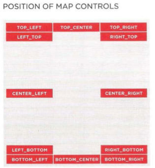

JAVASCRIPT APIs
Para ver si un navegador tiene una funcionalidad
if (navigator.geolocation) {
// codigo
} else {
// codigo
}
if (Modernizr.awesomeNewFeature) {
showOffAwesomeNewFeature();
} else {
getTheOldLameExperience();
}
LIBRERIA STANDARD
Math
Math es un Objeto Global que actua sobre numeros
- Propiedades
Math.PI - Devuelve pi 3.14159265359
Math.E- constante de Euler
Math.LN2 - logaritmo natural de 2
Math.LN10 - logaritmo natural de 10
Math.LOG2E - logaritmo en base 2 de e
Math.LOG10E - logaritmo en base 10 de e
Math.SQRT1_2 - raiz cuadrada de medio (1/2)
Math.SQRT2 - raiz cuadrada de 2
- Metodos
Math.abs(num) - Devuelve el valor absoluto de num
Math.round(num) - Redondea num al entero mas cercano
Math.sqrt(num) - Devuelve la raiz cuadrada del numero positivo num
Math.ceil(num) - Redondea al entero mas cercano por arriba
Math.floor(num) - Redondea al entero mas cercano por abajo
Math.random() - Genera un numero aleatorio entre 0 (inclusivo) y 1 (no inclusivo)
Math.pow(num, pot) - Devuelve num elevado a la pot
Math.max(num1, num2, num3) - devuelve el mayor numero
Math.min(num1, num2, num3) - devuelve el menor numero
Math.acos(x) -
Math.asin(x) -
Math.atan(x) -
Math.atan2(x) -
Math.cos(x) -
Math.sin(x) -
Math.tan(x) -
// Crea un numero aleatorio entre min y max ambos inclusivo
Math.floor(Math.random() * (max - min + 1) + min);
Date
- Crear Objeto Date
var d = new Date();
var d = new Date(millis);
var d = new Date(dateString);
var d = new Date(year, month, day, hours, minutes, seconds, millis);
- Metodos
Date.now() - devuelve el numero de Milisegundos desde el 1 ene 1970
Date.parse() - parsea la fecha y devuelve el numero de Milisegundos desde el 1 ene 1970
.getDate() , .setDate() - Dia del mes (1-31)
.getDay() - Dia de la semana (0-6)
.getFullYear() , .setFullYear() - año (4 digitos)
.getHours() , .setHours() - Hora (0-23)
.getMilliseconds() , .setMilliseconds() - Milisegundos (0-999)
.getMinutes() , .setMinutes() - Minutos (0-59)
.getMonth() , .setMonth() - Mes (0-11)
.getSeconds() , .setSeconds() - Segundos (0-59)
.getTime() , .setTime() - Milisegundos desde 1 Enero 1970 00:00:00 y negativo para cualquier tiempo anterior a esa fecha
.getTimezoneOffset() - Minutos de diferencia horaria entre UTC y la hora local
Version para UTC
.getUTCDate() , .setUTCDate() - Dia del mes (1-31)
.toDateString() - Fecha del tipo Mon Jan 17 1982
.toTimeString() - Hora del tipo 19:45:15 GMT+0300 (CEST)
.toString() - Devuelve una string con la fecha especificada
.toISOString() - Devuelve una string con la fecha especificada usando el standard ISO
.date.toJSON() - Devuelve una string con la fecha especificada formateado en JSON.
.toLocaleDateString() - Devuelve una string con la fecha especificada usando las convenciones segun la hora local
.toLocaleTimeString() - Devuelve una string con la fecha especificada usando las convenciones segun la hora local
.toLocaleString() - Devuelve una string con la fecha especificada usando las convenciones segun la hora local
.toUTCString() - Devuelve una string con la fecha especificada segun la hora universal
.valueOf()- Devuelve el valor primitico de un objeto Date
JSON
- JSON.stringify
JSON.stringify(value, replacer?, space?) convierte el valor value a una cadena en formato JSON.
replacer es opcional y se usa para cambiar valueantes de stringify
function replacer(key, value) {
if (typeof value === 'number') {
value = 2 * value;
}
return value;
}
JSON.stringify({ a: 5, b: [ 2, 8 ] }, replacer)
// '{"a":10,"b":[4,16]}
- JSON.parse
JSON.parse(text, reviver?) convierte los datos JSON en text y devuelve un valor javascript
reviver es opcional y se puede usar para transformar los datos ya parseados
STRICT MODE
- Variables han de ser definidas explicitamente
- No se puede borrar una variable u objeto usando
delete - No se puede definir la misma propiedad dos veces
- No permite los nombres de parametros duplicados
- En una funcion si no se conoce
thisen lugar de usar el objeto globalwindowseraundefined - Las variables instanciadas dentro del contexto de eval() sólo son válidas en ese contexto.
- La sentencia
with(){}ya no se usa
js
Envolvemos todo la parte del codigo js en una IIFEs
(function() {
'use strict'; /* code here */
.. codigo
}());
node.js
añadimos al comienzo del archivo
/*jslint node: true */
'use strict';
WEB STORAGE
Objeto Storage
Los navegadores guardan sobre 8mb por dominio en un objecto storage
Los datos se guardan como propiedades (clave/calor) del objeto storage
Acceso a los datos se hace de manera sincrona
Los navegadores usan politica del mismo origen, vamos que los datos solo son accesibles por otras paginas del mismo dominio
Para ello las 4 partes del URL deben coincidir
- Protocolo ¡ ojo que https es distinto a http !
- Subdominio, maps.google.com no puede acceder a datos guardados de www.google.com
- Dominio debe coincidir
- Puerto, este tambien debe coincidr

- Propiedades
.length - numero de claves
- Metodos
.setItem('clave', 'valor') - Crea una nueva pareja clave/valor
.getItem('clave') - Devuelve el valor de la clave "clave"
.removeItem('clave') - Elimina la clave/valor para esa clave
.clear() - Limpia toda la informacion del objeto storage

- sessionStorage
- Cambios frecuentes cada vez que el usuario visita el sitio, (datos de localizacion, logueos)
- Es personal y privado, no debe ser visto por otros usuarios del dispositivo
- localStorage
- Solo cambia en los intervalos establecidos (horarios, listas de precios) y es util almacenarlo offline
- Cosas que el usuario use de nuevo si vuelve al sitio (guardar preferencias y ajustes)
localStorage.setItem("username", "marijn");
console.log(localStorage.getItem("username"));
// → marijn
localStorage.removeItem("username");
Un valor en
localStoragedura hasta que se sobreescribe, se elimina o el usuario limpia sus datos locales
Cada pagina tiene su propio almacen que solo puede interactuar con scripts de la misma pagina
- Ejemplo
var basicRecipes = [{
title: 'Cookies',
ingredients: ['Cup shortening', 'Peanut Butter', 'Milk', 'Eggs']
}, {
title: 'Spaghetti',
ingredients: ['Noodles', 'Tomato Sauce', 'Meatballs', 'Onion']
}, {
title: 'Rice Pudding',
ingredients: ['White Rice', 'Milk', 'Sugar', 'Salt']
}];
// Estas dos hacen lo mismo
localStorage.setItem('basicRecipes', JSON.stringify(basicRecipes));
localStorage.basicRecipes = JSON.stringify(basicRecipes);
// Dos formas de hacer lo mismo tambien
var sol = JSON.parse(localStorage.getItem('basicRecipes'));
console.log(sol[0].title);
console.log((JSON.parse(localStorage.basicRecipes))[0]);
// Esto borra toda la localStorage
localStorage.clear()
IndexedDB
Web SQL
Deprecada, pero aun se usa
No funciona ni en chrome ni en IE
GEOLOCATION
- Metodos objeto
navigation.geolocation
getCurrentPosition(exito, error, conf) -
exito - funcion para procesar la ubicacion recibida en el objeto
Positionerror -funcion para procesar los errores retornados en el objetoPositionError
conf - objeto para configurar como la informacion sera adquirida
watchPosition(exito, error, conf) - igual que el anterior excepto que inicia un proceso de vigilancia para detectar nuevas ubicaciones que nos enviara cada cierto tiempo
clearWatch(id) - El metodo watchPosition() retorna un valor que puede ser almacenado en una variable para luego ser usado como id aqui y detener la vigilancia
- Propiedades objeto
Position
.coords.latitude - Devuelve latitud en grados decimales
.coords.longitude - Devuelve longitud en grados decimales
.coords.accuracy - Precision de latitud y longitud en metros
.coords.altitude - Devuelve metros sobre el nivel del mar
.coords.altitudeAccuracy - Precision de la altitud en metros
.coords.heading - Devuelve grados respecto al norte
.coords.speed - Devuelve velocidad en m/s
.coords.timestamp - Devuelve tiempo desde que se creo (en forma de Date)
- Propiedades objeto
PositionError
PositionError.code - Devuelve un numero de error con los valores:
- Permiso denegado
- No disponeble
- Ha expirado el tiempo
PositionError.message - Devuelve un mensaje (pero no para el usuario)
var elMap = document.getElementById('loc');
var msg = 'Sorry, we were unable to get your location.';
if (Modernizr.geolocation) {
navigator.geolocation.getCurrentPosition(success, fail);
elMap.textContent = 'Checking location...';
} else {
elMap.textContent = msg;
}
function success(position) {
msg = '<h3>Longitude: ';
msg += position.coords.longitude + '</h3>';
msg += '<h3>Latitude: ';
msg += position.coords.latitude + '</h3>';
elMap.innerHTML = msg;
}
function fail(msg) {
elMap.textContent = msg;
console.log(msg.code);
}
HISTORY
Objeto history
- Propiedades
.length - numero de articulos en el objeto historia
- Metodos
history.back() - Retrocedes en la historia a la anterior posicion
history.forward() - Saltas adelante a la siguiente posicion
history.go(n) - Te lleva a la pagina n respecto de tu posicion que es la 0. Por ejemplo -2 echa dos para atras y 1 salta uno hacia adelante
history.pushState() - Añade un elemento a la historia
history.replaceState() - Cambia el actual elemento de la historia por el que pasamos ahora
- Eventos
window.onpopstate - Usado para manejar los movimientos de usuario de adelante atras
GOOGLE MAPS
API Key
Ajustes
- Crear un mapa
- El evento
onloadllama a la funcionloadScript()LoadScript()crea un elemento<script>que carga la API y cuando se carga llama ainit()que inicializa el mapainit()carga el mapa en la pagina. Primero crea un objetomapOptionscon propiedadesLuego usa el contructor Map() para crear el map y dibujarlo en la pagina. El contructor tiene dos paremetros
el elemento dentro del cual el mapa aparecera dentro
- el objeto
mapOption
zoom - Entre 0 (el mundo entero) y 16
mapTypeId - ROADMAP, SATELLITE, HYBRID, TERRAIN
function init() {
var mapOptions = { // Set up the map options
center: new google.maps.LatLng(40.782710,-73.965310),
mapTypeId: google.maps.MapTypeId.ROADMAP,
zoom: 13
};
var venueMap; // Map() draws a map
venueMap = new google.maps.Map(document.getElementById('map'),
mapOptions);
}
function loadScript() {
var script = document.createElement('script');
script.src = 'http://maps.googleapis.com/maps/api/js?sensor=false&
callback=init';
document.body.appendChild(script);
}
window.onload = loadScript;
- Cambiar los controles


function init() {
var mapOptions = {
zoom: 14,
center: new google.maps.LatLng(40.782710,-73.965310),
mapTypeId: google.maps.MapTypeId.ROADMAP,
panControl: false,
zoomControl: true,
zoomControlOptions: {
style: google.maps.ZoomControlStyle.SMALL,
position: google.maps.ControlPosition.TOP_RIGHT
},
mapTypeControl: true,
mapTypeControlOptions: {
style: google.maps.MapTypeControlStyle.DROPDOWN_MENU,
position: google.maps.ControlPosition.TOP_LEFT
},
scaleControl: true,
scaleControlOptions: {
position: google.maps.ControlPosition.TOP_CENTER
},
streetViewControl: false,
overviewMapControl: false
};
var venueMap = new google.maps.Map(document.getElementById('map'),
mapOptions);
}
function loadScript() {
var script = document.createElement('script');
script.src = 'http://maps.googleapis.com/maps/api/js?sensor=false
&callback=init';
document.body.appendChild(script);
}
window.onload = loadScript;
- Añadir marcadores
var pinlocation = new google.maps.Latlng(40.782710,-73.965310);
var startPosition = new google.maps.Marker({ // Create marker
position: pinLocation, // Set position
map: venueMap, // Specify the map
icon: "img/go.png" // Path to image
});
CANVAS
Graficos para la web
<canvas> - Crea el lienzo para dibujar
<body>
<section id="cajacanvas">
<canvas id="canvas" width="500" height="300"></canvas>
</section>
</body>
.getContext(opcion) - Genera un contexto de dibujo que se asigna al lienzo. opcion puede ser "2d" o "webGL"
function iniciar(){
var elem = document.getElementById('lienzo');
var lienzo = elem.getContext('2d');
// Aqui los distintos ejemplos posteriores
}
addEventListener("load", iniciar);
Dibujar

function iniciar(){
var elemento=document.getElementById('lienzo');
lienzo=elemento.getContext('2d');
// codigo para dibujar y hacer cosas
}
window.addEventListener("load", iniciar, false)
- Rectangulos
Metodos
fillRect(x,y,ancho,alto) - Dibuja un rectangulo solido. La esquina superior izquierda esta en x,y. Ancho y alto definen el tamaño del rectangulo
strokeRect(x,y,ancho,alto) - Como el anterior pero solo dibuja el contorno
clearRect(x,y,ancho,alto) - Es un borrador rectangular
lienzo.strokeRect(100,100,120,120);
lienzo.fillRect(110,110,100,100);
lienzo.clearRect(120,120,80,80);
- Color
Propiedades
strokeStyle - color para el contorno de la figura
fillStyle - color para el interior de la figura
globalAlpha - especifica la transfercnia para todas las figuras dibujadas en el lienzo
lienzo.fillStyle = "#000099";
lienzo.strokeStyle = "#990000";
lienzo.strokeStyrl = "rgba(255, 165, 0, 1)"
lienzo.globalAlpha = 0.5 // (0 opaco, 1 transparente)
- Degradados
Metodos
createLinearGradient(x1,y1,x2,y2) - Crea un objeto que luego sera usado para aplicar un gradiente lineal al lienzo
createRadialGradient(x1,y1,r1,x2,y2,r2) - Crea un objeto que luego será usado para aplicar un gradiente circular o radial al lienzo usando dos círculos. Los valores representan la posición del centro de cada círculo y sus radios
addColorStop(posicion,color) - Posición es un valor entre 0 y 1 que determina dónde la degradación comenzará para ese color en particular. Color especifica los colores que usaran los gradientes
var gradiente = lienzo.createLinearGradient(0, 0, 10, 100);
gradiente.addColorStop(0.5, '#0000FF');
gradiente.addColorStop(1, '#000000');
lienzo.fillStyle = gradiente;
- Crear Trazados
Lo normal es procesar figuras en segundo plano y una vez hecho enviarlas al contexto a ser dibujadas.
Un trazado es como un mapa a ser seguido por el lapiz. Puede incluir diferentes tipos de líneas, como líneas rectas, arcos, rectángulos ... para crear figuras complejas
Metodos para comenzar y cerrar el trazado
beginPath() - Describe el comienzo de una nueva figura. Se llama primero, antes de comenzar a crear el trazado
closePath() - Cierra el trazado generando una linea recta desde el ultimo punto hasta el punto de origen. Se puede ignorar cuando usamos el metodo fill() para dibujar el trazado en el lienzo
Metodos para dibujar el trazado en el lienzo
stroke() - dibuja el trazado de una figura vacia (solo el contorno)
fill() - dibuja el trazado de una figura solida
clip() - declara una nueva area de corte para el contexto. Al inicializar el contexto el area de corte es el area completa ocupada por el lienzo. clip() cambia esa area a una nueva forma creando una mascara. Todo lo que este fuera de esa mascara no sera dibujado
lienzo.beginPath();
// aquí va el trazado
lienzo.stroke();
Metodos para crear el trazado
moveTo(x,y) - mueve el lapiz a una posicion para continuar con el trazado
lineTo(x,y) - genera linea recta desde la posicion actual hasta la nueva x,y
rect(x,y,ancho,alto) - genera un texangulo que forma parte del trazado
arc(x,y,radio,anguloInicio,anguloFinal,direccion) - genera un arco o circulo en la posicion x,y con radio y desde un anguloInicio hasta anguloFinal. La direccion false a favor de las agujas del reloj, true en contra
quadraticCurve(cpx,cpy,x,y) - genera una curva cuadratica bezier desde la posicion actual hasta las posicion x,y. cpx y cpy indican el punto que dara forma a la curva
bezierCurve(cp1x,cp1y,cp2x,cp2y,x,y) - como el anterior pero genera una curva bezier cubica con dos puntos para moldear la curva
lienzo.beginPath();
lienzo.moveTo(100,100);
lienzo.lineTo(200,200);
lienzo.lineTo(100,200);
// Opcion 1
lienzo.closePath(); lienzo.stroke();
// Opcion 2
lienzo.fill();
// circulos con arc()
lienzo.arc(100,100,50,0,Math.PI*2, false);
// arco de 45 grados
var radianes=Math.PI/180*45;
lienzo.arc(100,100,50,0,radianes, false);
- Estilos de linea
Propiedades afectan al trazado completo. para cambia las caracteristicas de las lineas hay que crear un nuevo trazado
lineWidth - Determina el grosor de la linea, por defecto = 1
lineCap - Determina la forma de la terminacion de la linea butt, round ó square
lineJoin - Forma de la conexion entre dos lineas, round, bevel ó miter
miterLimit - Determina cuanto la conexion de dos lineas sera extendida cuando lineJoin="miter"
lienzo.beginPath();
lienzo.arc(200,150,50,0,Math.PI*2, false);
lienzo.stroke();
lienzo.lineWidth=10;
lienzo.lineCap="round";
lienzo.beginPath();
lienzo.moveTo(230,150);
lienzo.arc(200,150,30,0,Math.PI, false);
lienzo.stroke();
lienzo.lineWidth=5;
lienzo.lineJoin="miter";
lienzo.beginPath();
lienzo.moveTo(195,135);
lienzo.lineTo(215,155);
lienzo.lineTo(195,155);
lienzo.stroke();
- Texto
Propiedades
font - similar a font de CSS y acepta los mismos valores
textAlign - Alinea el texto, start, end, left, right, y center
textBaseline -Alineamiento vertical, top, hanging, middle, alphabetic, ideographic, y bottom
Metodos
strokeText(texto,x,y,opcional) - Dibuja el texto en la posicion x,y como una figura vacia(solo contornos). opcional declara el tamaño maximo,si el texto es mas extenso se encogera
fillText(texto,x,y) - Igual que el anterior pero el texto sera solido
measureText(texto,x,y) - Retorna informacion sobre el tamaño de un texto especifico. Util para combinar texto con otras formas y calcular posiciones o colisiones
lienzo.font="bold 24px verdana, sans-serif";
lienzo.textAlign="start";
lienzo.fillText("Mi mensaje", 100,100);
lienzo.font="bold 24px verdana, sans-serif";
lienzo.textAlign="start";
lienzo.textBaseline="bottom";
lienzo.fillText("Mi mensaje", 100,124);
var tamano=lienzo.measureText("Mi mensaje");
lienzo.strokeRect(100,100,tamano.width,24);
- Sombras
Propiedades
shadowColor - Color de la sombra usando sintaxis CSS
shadowOffsetX - Recibe un numero que indica cuan lejos esta la sombra del objeto en direccion horizontal
shadowOffsetY - Recibe un numero que indica cuan lejos esta la sombra del objeto en direccion vertical
shadowBlur - Produce efecto de difuminacion para la sombra
lienzo.shadowColor="rgba(0,0,0,0.5)";
lienzo.shadowOffsetX=4;
lienzo.shadowOffsetY=4;
lienzo.shadowBlur=5;
lienzo.font="bold 50px verdana, sans-serif";
lienzo.fillText("Mi mensaje ", 100,100);
- Transformaciones
translate(x,y) - Mueve el origen del lienzo
rotate(angulo) - Rota el lienzo alrededor del origen tantos angulos
scale(x,y) - Incrementa o disminuye las unidades de la grilla para reducir o ampliar todo lo dibujado. La escala se puede cambiar solo en un eje. Por defecto valor=1
transform(m1,m2,m3,m4,dx,dy) - El lienzo tiene una matriz de valores, esto aplica una nueva matriz sobre la actual para modificar el lienzo
setTransform(m1,m2,m3,m4,dx,dy) - Reinicializa la matriz de transformacion y establece una nueva con estos valores
// Moviendo, rotando y escalando.
lienzo.fillText("PRUEBA",50,20);
lienzo.translate(50,70);
lienzo.rotate(Math.PI/180*45);
lienzo.fillText("PRUEBA",0,0);
lienzo.rotate(-Math.PI/180*45);
lienzo.translate(0,100);
lienzo.scale(2,2);
lienzo.fillText("PRUEBA",0,0);
// Transformaciones acumulativas sobre la matriz.
lienzo.transform(3,0,0,1,0,0);
lienzo.font="bold 20px verdana, sans-serif";
lienzo.fillText("PRUEBA",20,20);
lienzo.transform(1,0,0,10,0,0);
lienzo.font="bold 20px verdana, sans-serif";
lienzo.fillText("PRUEBA",100,20);
- Restaurar el estado
Metodos
save() - graba es estado del lienzo
restore() - recupera el ultimo estado grabado
// Grabando el estado del lienzo.
lienzo.save();
lienzo.translate(50,70);
lienzo.font="bold 20px verdana, sans-serif";
lienzo.fillText("PRUEBA1",0,30);
lienzo.restore();
lienzo.fillText("PRUEBA2",0,30);
- globalCompositeOperation
Determina como una figura es poscionada y combinada con figuras ya dibujadas en el lienzo
Valores de la propiedad
source-over - POR DEFECTO - la nueva figura sera dibujada sobre las existentes
source-in - Solo la parte de la nueva figura que se sobrepone a las figuras previas es dibujada. El resto de la figura, e incluso el resto de las figuras previas, se vuelven transparentes.
source-out - Solo la parte de la nueva figura que no se sobrepone a las figuras previas es dibujada. El resto de la figura, e incluso el resto de las figuras previas, se vuelven transparentes.
source-atop - Solo la parte de la nueva figura que se superpone con las figuras previas es dibujada. Las figuras previas son preservadas, pero el resto de la nueva figura se vuelve transparente.
lighter - Ambas figuras son dibujadas (nueva y vieja), pero el color de las partes que se superponen es obtenido adicionando los valores de los colores de cada figura.
xor - Ambas figuras son dibujadas (nueva y vieja), pero las partes que se superponen se vuelven transparentes.
destination-over - Este es el opuesto del valor por defecto. Las nuevas figuras son dibujadas detrás de las viejas que ya se encuentran en el lienzo.
destination-in - Las partes de las figuras existentes en el lienzo que se superponen con la nueva figura son preservadas. El resto, incluyendo la nueva figura, se vuelven transparentes
destination-out - Las partes de las figuras existentes en el lienzo que no se superponen con la nueva figura son preservadas. El resto, incluyendo la nueva figura, se vuelven transparentes.
destination-atop - Las figuras existentes y la nueva son preservadas solo en la parte en la que se superponen.
darker - Ambas figuras son dibujadas, pero el color de las partes que se superponen es determinado substrayendo los valores de los colores de cada figura.
copy - Solo la nueva figura es dibujada. Las ya existentes se vuelven transparentes.
// robando la propiedad globalCompositeOperation
lienzo.fillStyle="#990000";
lienzo.fillRect(100,100,300,100);
lienzo.globalCompositeOperation="destination-atop";
lienzo.fillStyle="#AAAAFF";
lienzo.font="bold 80px verdana, sans-serif";
lienzo.textAlign="center";
lienzo.textBaseline="middle";
lienzo.fillText("PRUEBA",250,110);
Procesar imagenes
- drawImage()
Permite dibujar una imagen en el lienzo
drawImage(imagen,x,y) - Dibuja una imagen en el lienzo en la posicion x,y. La imagen puede ser una referencia a un elemento <img> <video> u otro <canvas>
drawImage(imagen,x,y,ancho,alto) - Como antes pero permite escalar la imagen
drawImage(imagen,x1,y1,ancho1,alto1,x2,y2,ancho2,alto2) - Los valores ..1 definen la parte de la imagen que sera cortada mientras que los valores ..2 indican el lugar donde sera insertado en el lienzo y su nuevo tamaño
var img = document.createElement('img');
img.setAttribute('src', 'http://www.formasterminds.com/snow.jpg');
img.addEventListener("load", function(){
lienzo.drawImage(img, 20, 20);
// Otra opcion: Ajustando la imagen al tamaño del lienzo
lienzo.drawImage(img, 0, 0, elem.width, elem.height);
});
- Datos de imagen
Toda imagen puede ser representada por una sucesión de números enteros representando valores rgba Un grupo de valores con esta información resultará en un array unidimensional que puede ser usado luego para generar una imagen.
Metodos
getImageData(x,y,ancho,alto) - toma un rectangulo del lienzo y lo convierte en datos. Retorna un objeto con propiedades width, height y data
putImageData(datosImagen,x,y) - convierte los datos de datosImagen en una imagen y la dibujan en el lienzo en la posicion x,y
createImageData((ancho,alto)|datos) - Crea datos para representar una imagen vacia. Todos los pixeles son negro transparente. Tambien puede recibir datos como atributo en lugar de ancho,alto
img = document.createElement('img');
img.setAttribute('src', 'snow.jpg');
img.addEventListener("load", modimagen);
function modimagen(){
lienzo.drawImage(img, 0, 0);
var info = lienzo.getImageData(0, 0, 175, 262);
var pos;
for(var x = 0; x < 175; x++){
for(var y = 0; y < 262; y++){
pos = (info.width * 4 * y) + (x * 4);
info.data[pos] = 255 - info.data[pos];
info.data[pos+1] = 255 - info.data[pos+1];
info.data[pos+2] = 255 - info.data[pos+2];
}
}
lienzo.putImageData(info, 0, 0);
}
- cross-origin
setAttribute("crossOrigin","anonymous|use-credentials") - anonymous hace caso omiso de las credenciales y use-credentials requiere credenciales
imagen.setAttribute("crossOrigin","anonymous|use-credentials");
- Extraccion de datos
Metodos
toDataURL(image/jpeg|image/png) - Devuelve los datos en formato data:url del contenido del lienzo a una resolucion de 96 ppp
toDataURL - Como la anterior pera la resolucion es la original del lienzo
toBlob(funcion,image/jpeg|image/png) - Devuelve un objeto con un blob(datos en crudo) que contiene la representacion del lienzo en el formato elegido y resolucion de 96 ppp. La funcion es la encargada de procesar el objeto.
toBlobHD(tipo) - Como el anterior pero la resolucion del blob es la del lienzo original
- Patrones
Los patrones son simples adiciones que pueden mejorar nuestros trazados.
createPattern(imagen,tipo) - imágen es una referencia a la imagen que vamos a usar como patrón, y tipo configura el patrón por medio de cuatro valores: repeat, repeat-x, repeat-y y no-repeat
img = document.createElement('img');
const imageUrl = 'http://www.formasterminds.com/content/bricks.jpg';
img.setAttribute('src', imageUrl);
img.addEventListener("load", modimagen);
}
function modimagen(){
var pattern = lienzo.createPattern(img, 'repeat');
lienzo.fillStyle = pattern;
lienzo.fillRect(0, 0, 500, 300);
}
Animaciones
Básicamente, debemos borrar el área del lienzo que queremos animar, dibujar las figuras y repetir el proceso una y otra vez.
Es mejor usar imagenes (png) que figuras con trazados complejos
- Elementales
// Dos ojos que miran al puntero del raton y lo siguen
var lienzo;
function iniciar(){
var elem = document.getElementById('lienzo');
lienzo = elem.getContext('2d');
addEventListener('mousemove', animar);
}
function animar(e){
lienzo.clearRect(0, 0, 300, 500);
var xraton = e.clientX;
var yraton = e.clientY;
var xcentro = 220;
var ycentro = 150;
var ang = Math.atan2(xraton - xcentro, yraton - ycentro);
var x = xcentro + Math.round(Math.sin(ang) * 10);
var y = ycentro + Math.round(Math.cos(ang) * 10);
lienzo.beginPath();
lienzo.arc(xcentro, ycentro, 20, 0, Math.PI * 2, false);
lienzo.moveTo(xcentro + 70, 150);
lienzo.arc(xcentro + 50, 150, 20, 0, Math.PI * 2, false);
lienzo.stroke();
lienzo.beginPath();
lienzo.moveTo(x + 10, y);
lienzo.arc(x, y, 10, 0, Math.PI * 2, false);
lienzo.moveTo(x + 60, y);
lienzo.arc(x + 50, y, 10, 0, Math.PI * 2, false);
lienzo.fill();
}
addEventListener("load", iniciar);
- Profesionales
<!DOCTYPE html>
<html lang="es">
<head>
<meta charset="utf-8">
<title>VideoJuegos</title>
<style>
body{
text-align: center;
}
#cajadelienzo{
margin: 100px auto;
}
#lienzo{
border: 1px solid #999999;
}
</style>
<script src="videojuego.js"></script>
</head>
<body>
<section id="cajadelienzo">
<canvas id="lienzo" width="600" height="400"></canvas>
</section>
</body>
</html>
requestAnimationFrame(funcion) - Sincroniza la animacion con la ventana del navegador y el monitor. hay que llamarlo para cada ciclo del bucle
cancelAnimationFrame(variable) - Podemos asignar el valor de arriba a una variable y con ese metodo cancelamos el proceso
Hay que concentrar el codigo del juego en un objeto global unico
var onoff;
function gameLoop() {
// haces lo que sea
onoff = requestAnimationFrame(gameLoop);
}
// en otro sitio para parar el bucle
cancelAnimationFrame(onoff);
function gameLoop () {
setTimeout(function () {
if (running) {
update();
render();
}
onoff = requestAnimationFrame(gameLoop);
// console.log('gameLoop sigue ... ', onoff)
if (cancel) {
cancelAnimationFrame(onoff);
setScoreToZeros();
}
}, 1000 / fps);
}
var mijuego = {
lienzo: {
ctx: '',
offsetx: 0,
offsety: 0
},
nave: {
x: 300,
y: 200,
movex: 0,
movey: 0,
speed: 1
},
iniciar: function(){
var elem = document.getElementById('lienzo');
mijuego.lienzo.ctx = elem.getContext('2d');
mijuego.lienzo.offsetx = elem.offsetLeft;
mijuego.lienzo.offsety = elem.offsetTop;
document.addEventListener('click', function(e){
mijuego.control(e);
});
mijuego.bucle();
},
bucle: function(){
if(mijuego.nave.speed){
mijuego.procesar();
mijuego.detectar();
mijuego.dibujar();
// requestAnimationFrame(function(){ mijuego.bucle() });
webkitRequestAnimationFrame(function(){ mijuego.bucle() });
}else{
mijuego.lienzo.ctx.font = "bold 36px verdana, sans-serif";
mijuego.lienzo.ctx.fillText('JUEGO FINALIZADO', 112, 210);
}
},
control: function(e){
var distancex = e.clientX - (mijuego.lienzo.offsetx + mijuego.nave.x);
var distancey = e.clientY - (mijuego.lienzo.offsety + mijuego.nave.y);
var ang = Math.atan2(distancex, distancey);
mijuego.nave.movex = Math.sin(ang);
mijuego.nave.movey = Math.cos(ang);
mijuego.nave.speed += 1;
},
dibujar: function(){
mijuego.lienzo.ctx.clearRect(0, 0, 600, 400);
mijuego.lienzo.ctx.beginPath();
mijuego.lienzo.ctx.arc(mijuego.nave.x, mijuego.nave.y, 20, 0,
Math.PI/180*360, false);
mijuego.lienzo.ctx.fill();
},
procesar: function(){
mijuego.nave.x += mijuego.nave.movex * mijuego.nave.speed;
mijuego.nave.y += mijuego.nave.movey * mijuego.nave.speed;
},
detectar: function(){
if(mijuego.nave.x < 0 || mijuego.nave.x > 600 || mijuego.nave.y < 0
|| mijuego.nave.y > 400){
mijuego.nave.speed = 0;
}
}
};
addEventListener('load', function(){ mijuego.iniciar(); });
Procesar Video
Coger cada cuadro del video desde el elemento
<video>y dibujarlo como una imagen en el lienzo usando drawImage()
- Mostrar video
<!DOCTYPE html>
<html lang="es">
<head>
<meta charset="utf-8">
<title>Video en el Lienzo</title>
<style>
section{
float: left;
}
</style>
<script>
var lienzo, video;
function iniciar(){
var elem = document.getElementById('lienzo');
lienzo = elem.getContext('2d');
video = document.getElementById('media');
lienzo.translate(483, 0);
lienzo.scale(-1, 1);
setInterval(procesarCuadros, 33);
}
function procesarCuadros(){
lienzs.drawImage(video, 0, 0);
}
addEventListener("load", iniciar);
</script>
</head>
<body>
<section>
<video id="medio" width="483" height="272" autoplay>
<source src="http://www.formasterminds.com/content/trailer2.mp4">
<source src="http://www.formasterminds.com/content/trailer2.ogg">
</video>
</section>
<section>
<canvas id="canvas" width="483" height="272"></canvas>
</section>
</body>
</html>
Graficos de tarta

<!doctype html>
<canvas width="600" height="300"></canvas>
<script>
var results = [
{name: "Contento", count: 1043, color: "lightblue"},
{name: "Neutral", count: 563, color: "lightgreen"},
{name: "Descontento", count: 510, color: "pink"},
{name: "No contesta", count: 175, color: "silver"}
];
var cx = document.querySelector("canvas").getContext("2d");
var total = results.reduce(function(sum, choice) {
return sum + choice.count;
}, 0);
var currentAngle = -0.5 * Math.PI;
var centerX = 300, centerY = 150;
results.forEach(function(result) {
var sliceAngle = (result.count / total) * 2 * Math.PI;
cx.beginPath();
cx.arc(centerX, centerY, 100,
currentAngle, currentAngle + sliceAngle);
var middleAngle = currentAngle + 0.5 * sliceAngle;
var textX = Math.cos(middleAngle) * 120 + centerX;
var textY = Math.sin(middleAngle) * 120 + centerY;
cx.textBaseLine = "middle";
if (Math.cos(middleAngle) > 0)
cx.textAlign = "left";
else
cx.textAlign = "right";
cx.font = "15px sans-serif";
cx.fillStyle = "black";
cx.fillText(result.name, textX, textY);
currentAngle += sliceAngle;
cx.lineTo(centerX, centerY);
cx.fillStyle = result.color;
cx.fill();
});
</script>